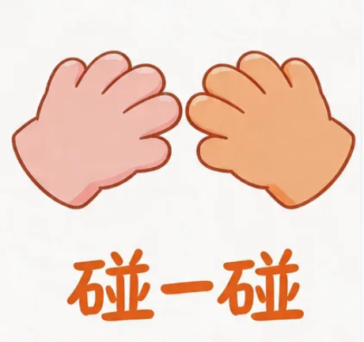

NFC碰一碰发视频
【养生推荐】这家中医馆的理疗服务太专业了！老中医把脉问诊，针灸推拿手法一流，身体疲劳一扫而空～ 打卡还有惊喜哦～ #中医馆 #养生保健 #中医理疗 #周末去哪儿
这家中医馆环境太雅致了！老中医坐诊把脉，还有艾灸、拔罐、推拿等理疗项目，店员还会讲解养生知识，逛累了还有免费养生茶水～ 周末不知道去哪就来这！#中医馆体验 #养生探店 #周末去哪儿
若下载报错，可复制链接到手机浏览器打开
发布素材后向店员出示，可领取惊喜福利